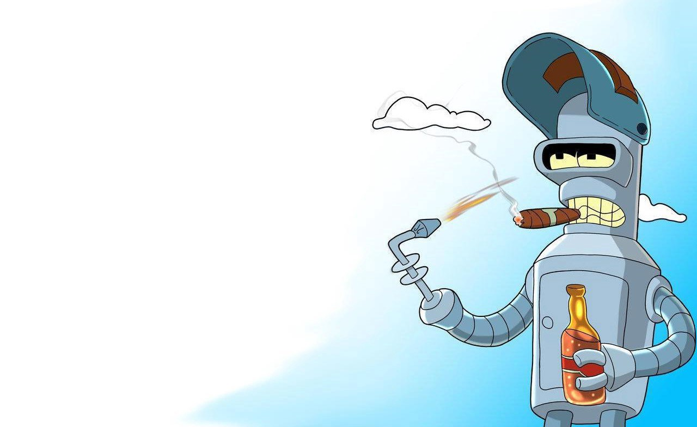
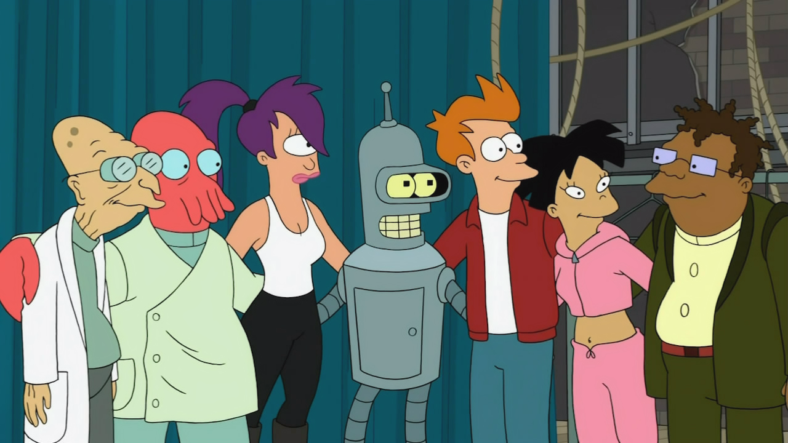

About Bender
Bender Bending Rodríguez (a.k.a. Bending Unit 22, unit number 1,729, serial number 2716057) is a character in the TV show Futurama (FOX 1999-2003, Comedy Central 2008-2013)
Bender's Composition
- 40% Zinc
- 40% Titanium
- 30% Iron
- 40% Dolomite
- 40% Luck/Horseshoes
- 40% Chromium
- 60% Storage Space
- 40% Scrap Metal
- 40% Wire
- 40% Empty
- 0.04% Nickel Impurity
- 40% Lead
Bender and the Rest of the Planet Express Crew
Characters Pictured in Order from Left to Right:
Professor Hubert J. Farnsworth, Dr. John A. Zoidberg, Turanga Leela, Bender, Philip J. Fry, Amy Wong, Hermes Conrad